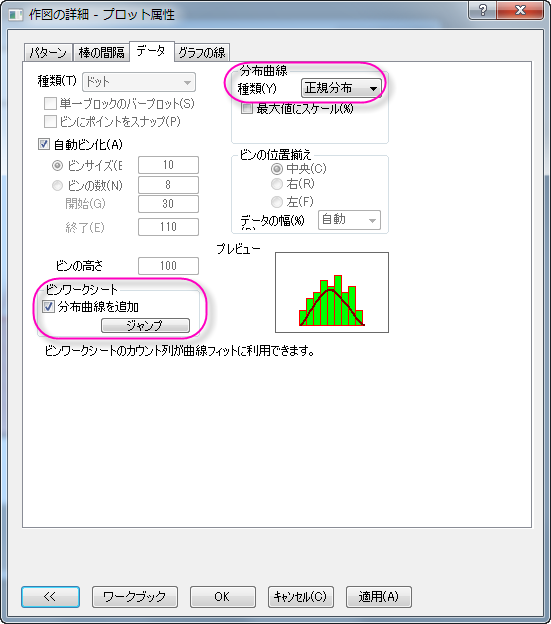

分布曲線付きヒストグラム
Histogram-DistributionCurve
サマリー
ヒストグラムを作図後、Origindでは、作図の詳細ダイアログのデータタブにある、種類ドロップダウンリストから正規分布、対数正規、ポアソン、指数、ラプラス、ローレンツから選択することにより、ビン化データ上に分布曲線を描くことができます。
学習する項目
- ヒストグラムを作成する
- 分布曲線を追加する
- 分布曲線データのビンワークシートを作成する
ステップ
- メインメニューから、データ：ファイルからインポート：単一ASCIIファイルを選択して、Sample: Graphing:
Histogram2.datをインポートします。
- B列を選択して、メインメニューから作図：統計：ヒストグラムを選択します。
- メインメニューのフォーマット：プロットを選択します。 開いたダイアログで、データタブをクリックして開きます。
- 分布曲線：種類のドロップダウンリストから、正規分布を選択し、適用ボタンをクリックします。分布曲線を追加のチェックボックスにチェックを付け、ジャンプをクリックします。すると、作図の詳細（プロット属性）ダイアログが閉じ、ビンデータのワークシート(Histogram2_B
Bins) がワークブックに追加されます。

- Histogram2_B Binsワークシートで、B(Y2)列のコメント行で、このデータのMean（平均）とSD（標準偏差）の値が出力されます。
このセルを右クリックして、メニューからコピーを選択します。
- ヒストグラムのフレーム内（棒上ではなく）を右クリックして、テキストの追加を選択します。追加されたテキストボックス内で、右クリックし、貼り付けを選択します。
MeanとSDの小数点以下1桁までを残し、それ以外をDeleteキーで削除します。Mean= 60.7
の後ろにカーソルを配置し、Enterキーをおして、改行します。 最終的に、下図のようなグラフになります。
| Note : もしデータが選択した分布によくフィットしていれば、分布曲線はヒストグラムと一致します。
|